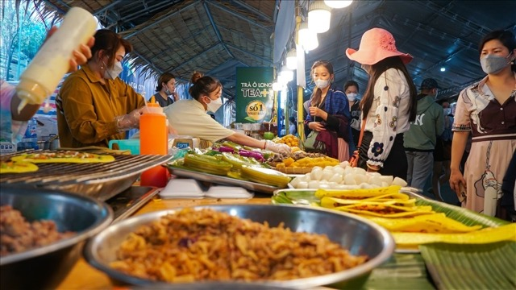
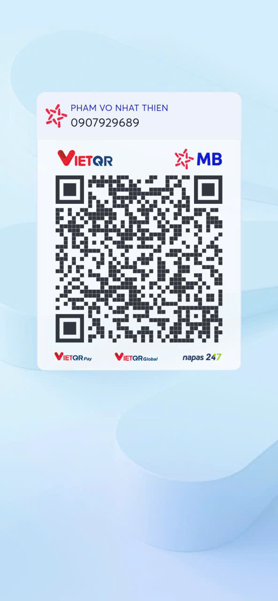

Không chỉ là dịp thưởng thức món ngon, lễ hội còn là nơi gặp lại những đôi tay khéo léo, những bếp lửa truyền đời và câu chuyện về nếp sống miệt vườn được gói ghém trong từng chiếc bánh.
Lễ hội Bánh Dân Gian Nam Bộ là một trong những sự kiện giàu bản sắc nhất của Cần Thơ bởi nơi đây quy tụ cả ẩm thực, nghề thủ công và ký ức đời sống miền Tây. Du khách không chỉ đi ăn, mà còn được nhìn thấy cách người dân gìn giữ hương vị quê nhà qua từng công đoạn làm bánh.
Điểm đáng quý của lễ hội là cảm giác rất thật: bột gạo, lá chuối, nước cốt dừa, tiếng trò chuyện của nghệ nhân và mùi thơm của bếp nóng tạo nên một không gian văn hóa sống động hơn nhiều so với một hội chợ ẩm thực thông thường.

Không gian lễ hội gợi lại hình ảnh gian bếp Nam Bộ với nhiều nguyên liệu và cách làm truyền thống.
Du khách có thể thấy sự tỉ mỉ của người làm bánh qua từng công đoạn rất đời thường mà tinh tế.
Nguyên liệu dân dã như nếp, khoai, đậu, lá chuối đều kể câu chuyện về đời sống sông nước.
Nếu nhìn sâu hơn món ăn, bạn sẽ thấy đây là một bảo tàng văn hóa sống, nơi ẩm thực trở thành chiếc cầu nối giữa ký ức gia đình, lao động nông nghiệp và bản sắc vùng đất Tây Đô.
Nhiều loại bánh gắn với mùa nước nổi, ngày giỗ, lễ tết hoặc những buổi chợ quê xưa.
Chỉ cần đi chậm và hỏi chuyện, bạn sẽ nghe được nhiều tích truyện thú vị về nguyên liệu và cách ăn.
Lễ hội tạo cảm giác gần gũi vì ai cũng dễ tham gia, dễ thử và dễ kết nối với người làm bánh.
Đi theo nhịp dưới đây sẽ giúp bạn không chỉ ăn ngon mà còn cảm được chiều sâu văn hóa của lễ hội.
Quan sát khu trình diễn, khu bánh cổ truyền và cách các gian hàng kể câu chuyện riêng của mình.
Xem thao tác gói, hấp, nướng sẽ khiến món ăn trở nên có chiều sâu hơn nhiều.
Nên xen kẽ bánh ngọt, bánh mặn và món dùng với nước cốt dừa để cảm được sự phong phú.
Đây là cách dễ thương để mang hương vị lễ hội về nhà sau chuyến đi.
Nếu bạn thấy website hữu ích, hãy ủng hộ một ly cà phê để nhóm có thêm động lực phát triển.

Quét mã QR hoặc nhấn vào ảnh để ủng hộ.
Đánh giá từ du khách
Hãy chia sẻ cảm nhận của bạn về không khí, hương vị và nét văn hóa tại Lễ hội Bánh Dân Gian Nam Bộ nhé.